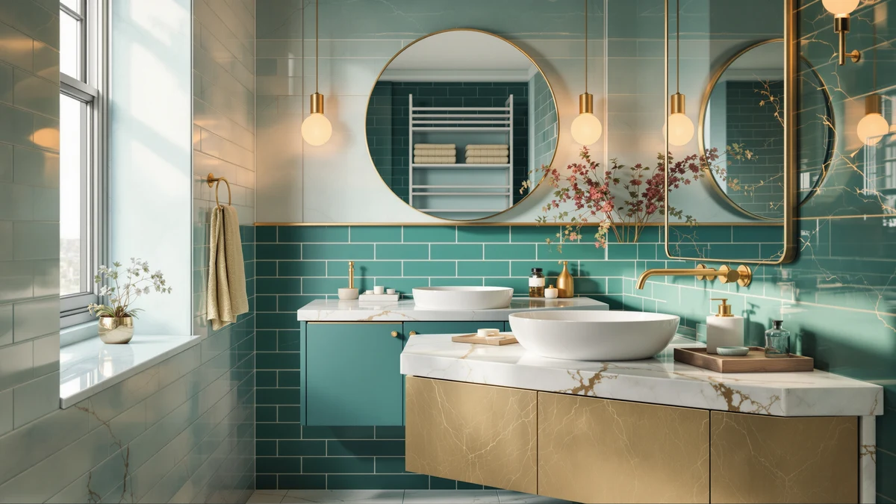

LIKIMIO 59" Bathroom Vanity Review (2026): Worth It?
Prices and picks verified as of October 2026. Independent, reader-supported reviews.


Quick Answer
The LIKIMIO 59" bathroom vanity is a $629.99, MDF-built cabinet sized at 59 by 19.7 by 35 inches, priced within $40 of three rivals we compared it against. It's a reasonable pick if your bathroom has the wall clearance for a 59 inch footprint and you don't need a published rating to feel confident, but shoppers who want a double sink or a smaller floating design should look at the alternatives below first.
Our pick: LIKIMIO 59" Bathroom Vanity with — $629.99 Check Price on Amazon
Bottom line: our top pick is the LIKIMIO 59" Bathroom Vanity with Sink at $629.99.
Things to Know Before You Buy
- Price across the four vanities in this LIKIMIO 59" bathroom vanity review spans $40, from $609.00 to $649.99, so price alone won't tell you which one fits your bathroom.
- The LIKIMIO is built from MDF engineered wood and measures 59 inches wide, 19.7 inches deep, and 35 inches tall, a footprint that calls for real wall clearance before you buy.
- If you need two separate basins, the SOFTSEA's 72 inch double-sink layout and the 48 inch freestanding double-sink vanity both list a double configuration, while the LIKIMIO's listing doesn't specify sink count.
- Only the 48 inch freestanding double-sink vanity carries a public rating among the four options here, at 4 out of 5 stars from 30 verified reviews.
- homary's 39.4 inch floating vanity trades cabinet storage for a smaller footprint and an easier-to-clean floor, a tradeoff worth weighing against the LIKIMIO's larger standing cabinet.
This LIKIMIO 59" bathroom vanity review breaks down what $629.99 actually buys: a 59 inch wide, 19.7 inch deep, 35 inch tall cabinet built from MDF engineered wood. You're probably weighing it against other vanities in the $600 to $650 range, so we lined it up against three rivals priced within $40 of it, the SOFTSEA 72 Inch Double Sink, the homary 39.4 Inch Floating vanity, and a 48 inch freestanding double-sink model, to see where the LIKIMIO holds its own and where it comes up short.
None of us installed these vanities ourselves. We compared the specs, pricing, and published details for each listing, and we pulled in the one verified rating available among the four, the 48 inch freestanding model's 4 out of 5 stars from 30 reviews, to give you a fuller picture than price and photos alone. The LIKIMIO doesn't have a public rating yet, which matters if you lean on reviewer feedback before you buy.
Why You Should Trust Us
Ilane Tall writes Best Bathroom Vanities and covers vanities, sinks, and cabinets for a living. We don't run a testing lab and we don't claim to have installed every vanity we write about. We read the same product listings, specs, and verified owner reviews you have access to, and we lay out what they actually say instead of repeating marketing copy. For this LIKIMIO 59" bathroom vanity review, that meant checking the listed dimensions, materials, price, and rating data against three comparable vanities before drawing any conclusions.
How We Compared
We didn't install the LIKIMIO 59" bathroom vanity in a bathroom ourselves. We compared its listed specs, price, and photos against three vanities in the same price bracket, and checked which ones have published owner feedback. The LIKIMIO's listing gives a clear size and material breakdown, 59 by 19.7 by 35 inches in MDF engineered wood, but it doesn't carry a rating or review count yet, so there's no verified owner feedback to weigh against the spec sheet.
The 48 inch freestanding double-sink vanity is the outlier here: it has 30 verified reviews averaging 4 out of 5 stars, which gives buyers a real data point the other three listings, including the LIKIMIO, currently lack. Reviewers consistently note that rating as a reason to compare that model closely before settling on this LIKIMIO 59" vanity.
Overview & Specs

LIKIMIO 59" Bathroom Vanity with
What we like
- 59 inch width gives more counter space than the 48 inch alternative for a similar price
- $629.99 sits comfortably between the cheapest and priciest vanities we compared it to
- MDF engineered wood construction keeps shipping weight and cost down versus solid-wood builds
Flaws but not dealbreakers
- No rating or review count is published yet for this listing, so you're relying on spec comparison rather than verified owner feedback
- Engineered wood tolerates standing water worse than solid wood, so spills around the basin need prompt cleanup
- The listing doesn't specify sink count, which matters if you're set on a double-sink layout
| Material | MDF / engineered wood |
| Size | 59" W x 19.7" D x 35" H |
The LIKIMIO 59" bathroom vanity sits at 59 inches wide, 19.7 inches deep, and 35 inches tall, a size that works best in a primary bathroom rather than a half bath or powder room. At $629.99, it's priced close to the middle of the four vanities in this comparison: $20 more than the 48 inch freestanding model, and $10 more than the SOFTSEA, but $20 cheaper than homary's floating option.
MDF engineered wood is the listed material, which is standard for vanities in this price range. It's lighter and cheaper to produce than solid wood, which keeps the sticker price down, but it means standing water around the basin or base should get wiped up rather than left to sit. Owners shopping in this category tend to accept that tradeoff for the lower upfront cost, since solid-wood vanities at this width routinely cost several hundred dollars more.
What We Liked
The 59 inch width is the clearest advantage in this LIKIMIO 59" bathroom vanity review. Compared to the 48 inch freestanding model, you get 11 extra inches of counter and storage without jumping up to a 72 inch double-sink layout like the SOFTSEA, which won't fit every bathroom. For a primary bathroom with the wall space to spare, that middle-ground size is a practical fit.
Price is the other point in its favor. At $629.99, the LIKIMIO undercuts homary's smaller 39.4 inch floating vanity by $20, despite offering a larger cabinet and more storage volume. If floor-standing storage matters more to you than a minimal wall-mounted look, that's a meaningful gap for the money.
We also like that the listing is specific about dimensions and material. A lot of vanity listings bury the depth measurement or round the height, but this one states 59 by 19.7 by 35 inches plainly, which makes it easier to check against your bathroom's actual clearance before you order.
What Could Be Better
The biggest gap in this LIKIMIO 59" bathroom vanity review is the missing rating. Among the four vanities compared here, only the 48 inch freestanding double-sink model has a published rating and review count, 4 out of 5 stars from 30 reviews. Without similar data on the LIKIMIO, you're buying on spec sheet and price rather than on what other owners have reported.
The listing also doesn't state sink count. If a double-sink layout is a requirement for your household, the SOFTSEA and the 48 inch freestanding model both specify "double" in their titles, and the LIKIMIO's listing leaves that detail out entirely.
Finally, MDF engineered wood construction is a reasonable cost-saving choice, but it's worth going in with the right expectations: it won't hold up to standing water the way solid wood or marine-grade plywood does, so day-to-day care matters more than it would with a pricier material.
Who Is It For?
The LIKIMIO 59" bathroom vanity suits a buyer who has a 59 inch stretch of bathroom wall to work with and wants more counter and storage than a 48 inch vanity without stepping up to a 72 inch double-sink cabinet. It also fits someone comfortable buying on spec sheet and price alone, since there's no review history to lean on yet.
If you need two basins, want a wall-mounted floating design, or want to see what other owners actually said before you commit, one of the three alternatives below is probably the better starting point.
Alternatives to Consider
The LIKIMIO isn't the only option in its price bracket. We compared three vanities priced within $40 of it, each built around a different priority: two basins instead of one, a wall-mounted footprint instead of a standing cabinet, or a published rating instead of none. Here's how each one stacks up against the LIKIMIO 59" bathroom vanity.

Editor’s Pick
SOFTSEA 72 Inch Double Sink
At $619.99, the SOFTSEA undercuts the LIKIMIO by $10 while adding 13 extra inches of width and a double-sink layout, the configuration the LIKIMIO's listing doesn't specify. The tradeoff is footprint: 72 inches of wall space is a much bigger ask than 59, so this pick only makes sense if your bathroom has the room and two people need to use the counter at once. For a shared primary bathroom, that extra basin and the lower price make it worth a close look before you commit to the LIKIMIO.
$619.99
Check Price on Amazon
Best Value
homary 39.4 inch Floating Bathroom
homary's 39.4 inch floating vanity costs $20 more than the LIKIMIO at $649.99, but it buys a wall-mounted design that leaves the floor clear underneath, a real advantage in a small bathroom where every square foot of visible floor matters for cleaning and visual space. You give up cabinet volume compared to the LIKIMIO's larger standing footprint, so it's a better match for a compact bathroom than a primary one that needs heavy storage.
$649.99
Check Price on Amazon
Premium Choice
48" Freestanding Bathroom Vanity Double
This 48 inch freestanding double-sink vanity is the cheapest of the four at $609.00, and it's the only one with a track record: 30 verified reviews averaging 4 out of 5 stars. That rating gives it a real edge the LIKIMIO can't yet match, since its listing has no published rating at all. The compromise is size: 48 inches is 11 inches narrower than the LIKIMIO, so you're trading counter space for a lower price and actual owner feedback.
$609.00
Check Price on AmazonIs the LIKIMIO 59" bathroom vanity worth the price?
At $629.99, the LIKIMIO 59 inch bathroom vanity lands in the middle of the four vanities we compared, cheaper than the homary floating vanity and more expensive than the 48 inch freestanding model.
What is the LIKIMIO 59" bathroom vanity made of, and will it hold up to moisture?
The listing specifies MDF engineered wood construction rather than solid wood or plywood.
Frequently Asked Questions
Is the LIKIMIO 59" bathroom vanity worth the price?
At $629.99, the LIKIMIO 59 inch bathroom vanity lands in the middle of the four vanities we compared, cheaper than the homary floating vanity and more expensive than the 48 inch freestanding model. Its MDF engineered wood build keeps the price down compared to solid-wood cabinets, and the 59 inch width gives you more counter space than a 48 inch vanity for roughly the same money. Whether it's worth it depends on how much floor and wall clearance your bathroom actually has.
What is the LIKIMIO 59" bathroom vanity made of, and will it hold up to moisture?
The listing specifies MDF engineered wood construction rather than solid wood or plywood. Engineered wood of this type generally costs less and weighs less to ship, but it tolerates standing water worse than solid wood, so splashes around the basin and base need to be wiped up promptly rather than left to sit overnight.
What's a good alternative to the LIKIMIO 59" bathroom vanity if I need a double sink or a different size?
If you need two basins, the SOFTSEA 72 Inch Double Sink vanity and the 48 inch freestanding double-sink vanity both list a double configuration, while the LIKIMIO's listing does not specify sink count. If floor space is tight, the homary 39.4 inch floating vanity mounts to the wall instead of standing on the floor.
Final Verdict
This LIKIMIO 59" bathroom vanity review comes down to a size and price tradeoff rather than a clear winner or loser. LIKIMIO's 59 inch vanity earns its spot for a primary bathroom with the wall clearance to spare and a buyer willing to decide on specs instead of a review history. If you need a double sink, want a floating design, or want the reassurance of verified owner ratings, the SOFTSEA, homary, or the 48 inch freestanding model each solve one of those problems better than LIKIMIO does here.